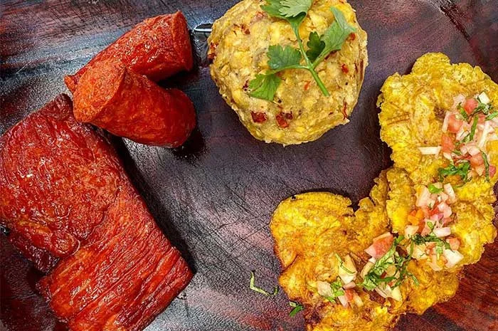
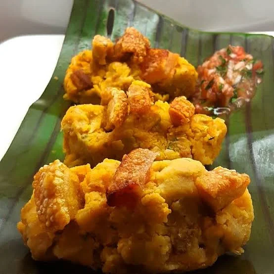
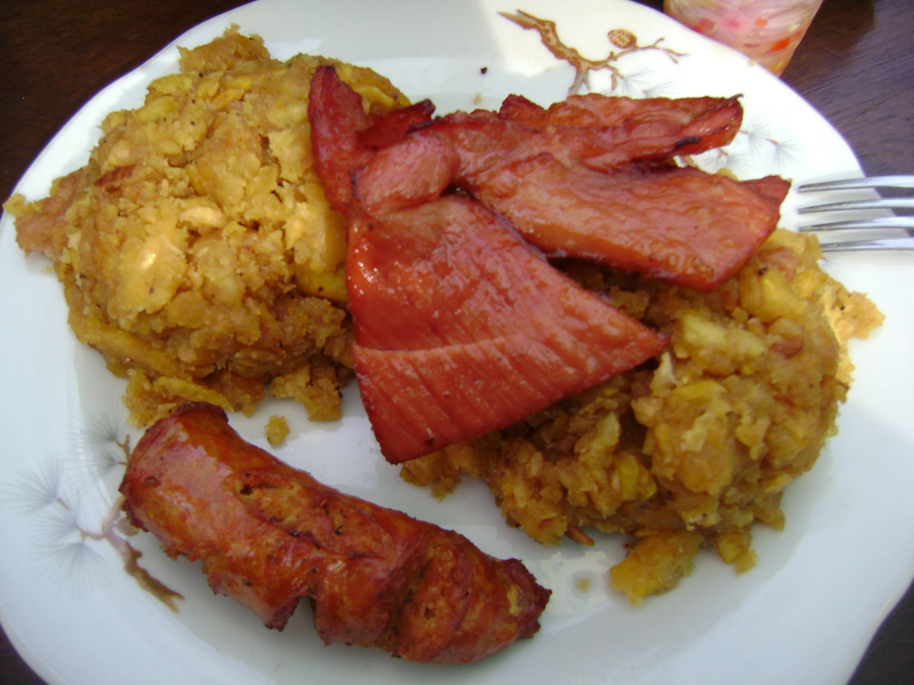
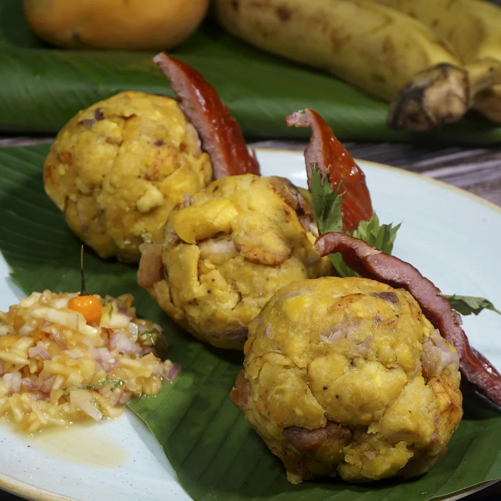

Experiencia turística
Sobre la experiencia
Conoce el lugar
El tacacho es una preparación tradicional elaborada principalmente a partir de plátano, ingrediente fundamental en diferentes expresiones gastronómicas de la región amazónica. Su preparación representa parte de los sabores y costumbres alimentarias que pueden encontrarse en Putumayo.
Probar este plato permite acercarse a la gastronomía local desde una perspectiva diferente al turismo de naturaleza. Dependiendo del establecimiento, puede encontrarse acompañado de diferentes ingredientes y preparaciones propias de la cocina regional.



La información turística puede cambiar. Confirma condiciones de acceso, seguridad, horarios, precios y disponibilidad con fuentes oficiales o prestadores locales antes de desplazarte.